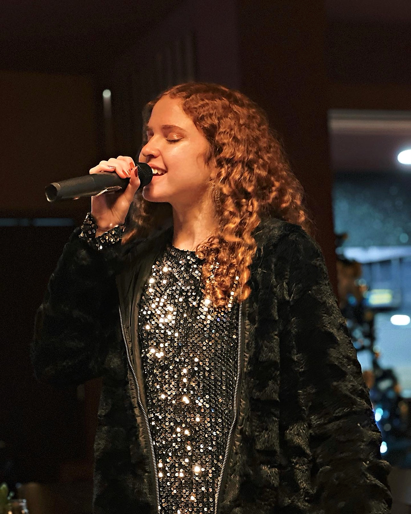
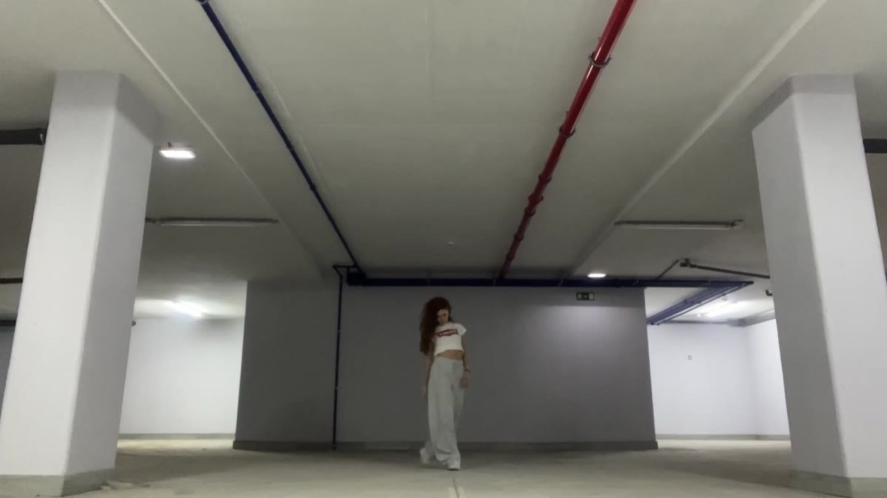
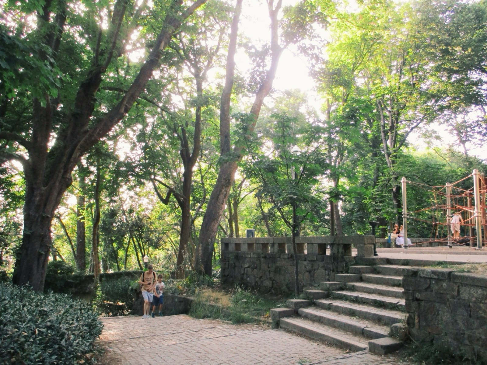

Arquivo
Currículos
Currículos em PDF, disponíveis para consulta e descarregamento.
Artista · Porto / Oliveira de Azeméis

Comecei na música aos 5 anos, ao piano, e a cantar pouco depois. Completei o 8.º grau de piano na Academia de Música de São João da Madeira e, aos 13, comecei a escrever as minhas próprias canções, lançadas em todas as plataformas.
Em 2024 iniciei o Curso de Produção Musical na Rockschool, Porto, e integro hoje a equipa de produção do produtor João André.
Ver maisDesde os 8 anos que exploro a dança em diferentes estilos — Hip Hop, Comercial e Contemporâneo — tendo participado e sido premiada em diversos espetáculos.
Ver mais

Currículos em PDF, disponíveis para consulta e descarregamento.
.pdf.png)
.pdf.png)